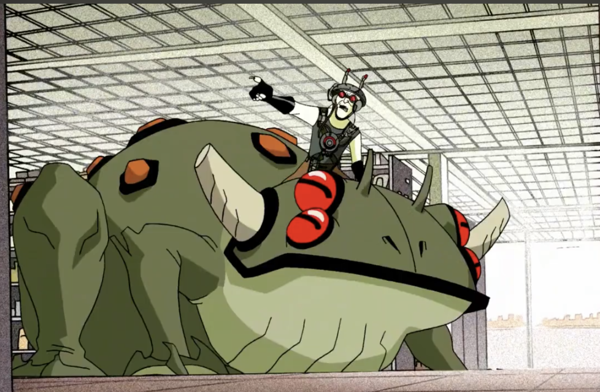
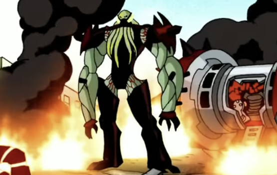
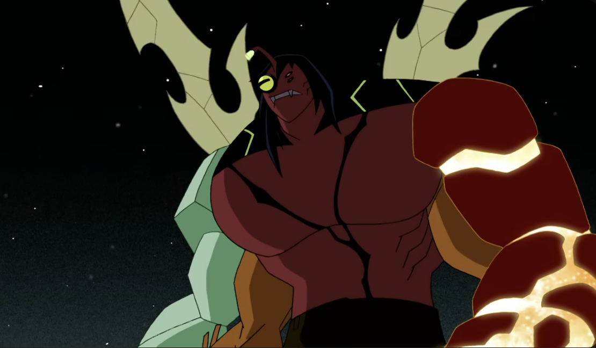
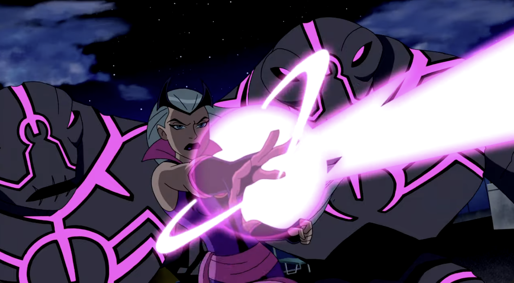
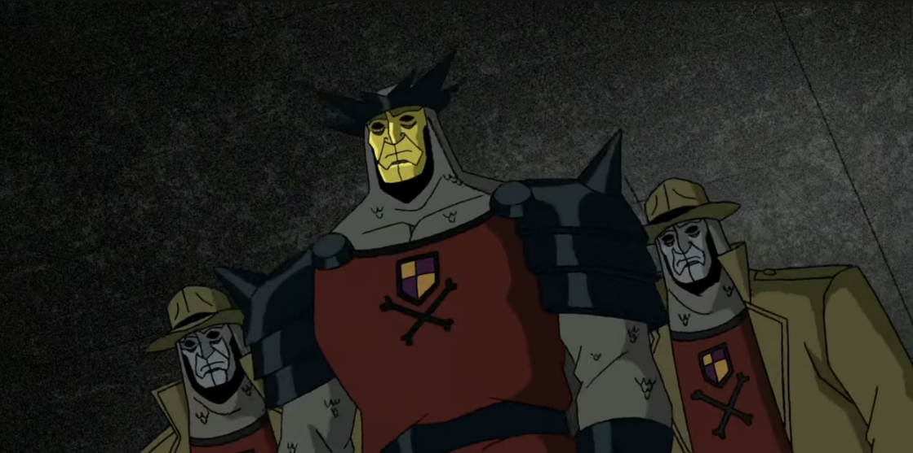
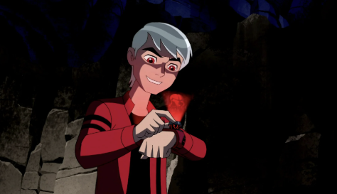
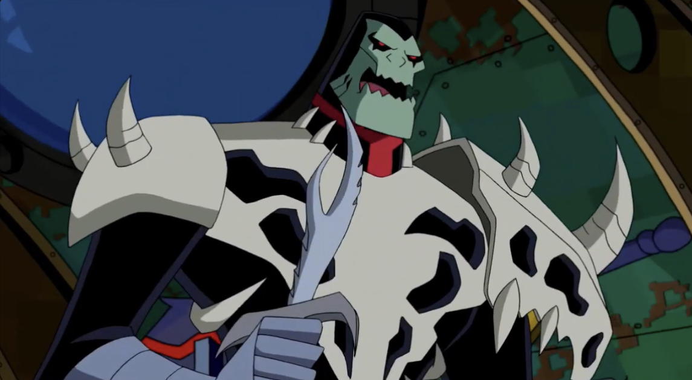
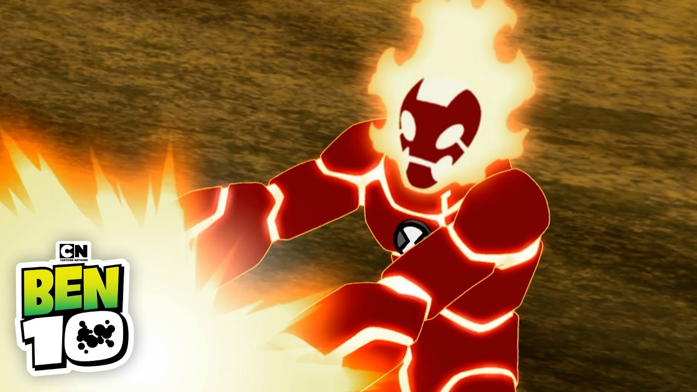

About Ben's Villains
Ben Tennyson has faced many dangerous enemies throughout the Ben 10 franchise. Some seek power, others revenge, and some simply want to control the Omnitrix. These villains push Ben to grow stronger, smarter, and more responsible as a hero.
This page highlights Ben's most iconic and recurring villains across the series.
Dr. Animo

Dr. Animo is a mad scientist obsessed with genetic mutation. Using his Transmodulator device, he mutates animals into monstrous creatures. Though often comedic, Animo is persistent and surprisingly dangerous.
Key Traits:
- Expert in genetic engineering
- Creates mutated animals and monsters
- Recurring villain across multiple series
Vilgax

Vilgax is Ben's most iconic enemy and one of the galaxy's most feared warlords. Obsessed with obtaining the Omnitrix, Vilgax repeatedly battles Ben across multiple series. His strength, durability, and tactical intelligence make him one of Ben's deadliest foes.
Key Traits:
- Superhuman strength and durability
- Master tactician and conqueror
- Primary antagonist of the classic series
Kevin Levin (Kevin 11)

Before becoming an ally, Kevin was one of Ben's earliest and most dangerous enemies. After absorbing energy from the Omnitrix, he mutates into “Kevin 11,” gaining a monstrous form with the powers of multiple aliens. His unstable abilities and anger make him unpredictable.
Key Traits:
- Absorbs energy and alien DNA
- Mutates into hybrid alien forms
- Driven by jealousy and resentment toward Ben
Charmcaster

Charmcaster is a powerful sorceress and Gwen's magical rival. Using spells, enchanted artifacts, and her own cunning, she frequently clashes with the Tennysons. Her goals vary from revenge to gaining magical power.
Key Traits:
- Skilled in magic and spellcasting
- Uses enchanted items and constructs
- Complex motivations and recurring rival to Gwen
Forever Knights

The Forever Knights are a secretive organization dedicated to collecting alien technology and achieving dominance through advanced weaponry. Their origins stretch back centuries, and different factions of the group appear throughout the franchise. Some seek power, others seek order, but all are dangerous due to their access to stolen alien tech.
Key Traits:
- Highly organized and well-armed
- Use advanced alien and medieval-themed technology
- Multiple factions with different goals
- Long-running enemies of the Plumbers
Albedo

Albedo is a Galvan and former assistant to Azmuth, the creator of the Omnitrix. Obsessed with proving his superiority, Albedo attempted to create his own Omnitrix but accidentally linked it to Ben's DNA, trapping himself in a human form identical to Ben. This fuels his hatred, leading him to repeatedly seek revenge and a way to restore his original body.
Key Traits:
- Genius-level intellect and expert in Omnitrix technology
- Uses a red-colored Omnitrix or Ultimatrix variant
- Driven by pride, jealousy, and obsession with perfection
- One of Ben's most personal and persistent enemies
Khyber

Khyber is a skilled hunter introduced in Omniverse. Armed with his pet predator and a modified Nemetrix, he hunts Ben as if he were the ultimate trophy. His discipline, tracking skills, and alien-hunting technology make him a serious threat.
Key Traits:
- Elite hunter with advanced tracking skills
- Uses the Nemetrix to unleash predator aliens
- Calm, calculated, and highly dangerous
Alien vs Villain Battle Simulator
Click the button to see which alien fights which villain — and who wins!
Alien
